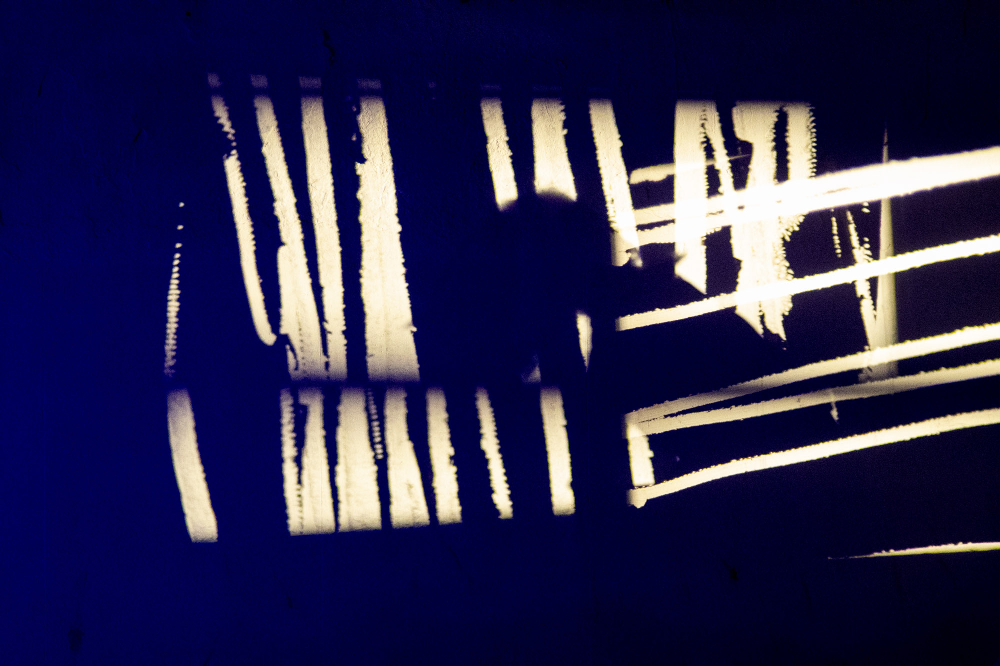
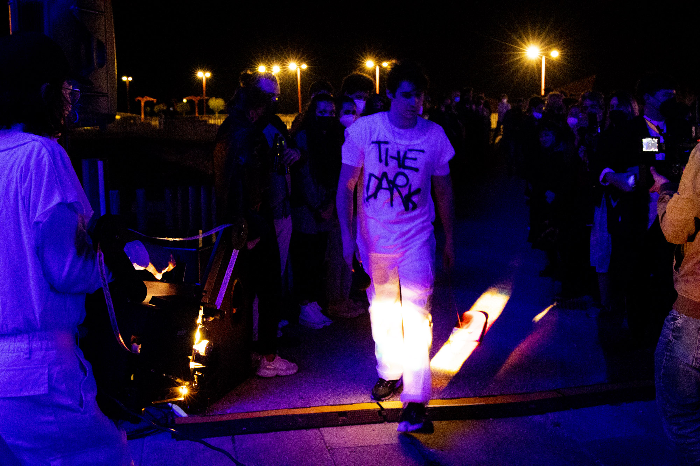

Kicked with the Front Foot on the Dark Side of the Deck
2020-21
Performance-environment
Desarrollado y presentado con Las de Cuenca y 1/2 skaters locales
Película de 16 mm, telas, cartones, luces LED, set de DJ, prismas y linternas, monopatín modificado, spray, alfombra roja, camisetas blancas, rollo de papel y otras técnicas/materiales mixtas
Reinventar el medio cinematográfico al final de la era del cine significa reconceptualizarlo como un “conjunto de convenciones derivadas de [...] las condiciones materiales de [su] soporte técnico, convenciones a partir de las cuales desarrollar una forma de expresión que pueda ser tanto proyectiva como mnemotécnica “. A Voyage on the North Sea: Art in the Age of the Post-Medium Condition
“Kicked with the Front Foot on the Dark Side of the Deck” es un entorno construído donde la proyección, la intervención performativa, y el sonido (tanto en vivo como ejecutado por la dj) interactúan. La obra tiene una estructura en la que se suceden distintos ‘actos’, en los cuales se van construyendo y deconstruyendo ‘instalaciones mutantes o mutables’, donde se van guiando distintos materiales, filmes, sonido/músico y acciones, como el propio skateboarding. Tomando como punto de partida una exploración de las potencialidades espaciales, plásticas y performativas del aparato fílmico, entendido este como formación ‘proyectiva y mnemotécnica’, intentamos desafiar tanto la supremacía tradicional de la imagen proyectada como la tendencia del cine expandido contemporáneo a generar experiencias perceptivas inmersivas para resaltar y explotar la presencialidad, la inmediatez y la corporalidad en esta obra situada entre el entorno sensorial, la performance y el montaje en una dimensión más espacial.
Este proyecto comenzó a gestarse con su presentación inicial en Ojorimaconmáquina (Valentina Alvarado y Carlos Vasquez) en La escocesa, Barcelona (diciembre de 2020), y continuó desarrollándose con alumnes de la Facultad de Bellas Artes de Cuenca en enero y febrero de 2021. Posteriormente se ha presentado en S8 Mostra de Cinema Periférico (A Coruña) y en Ars Santa Mónica (Barcelona).
Las de Cuenca son Tzuhan Hung, Toni Serrano, Paula Guerrero, Javi Montero (alumnes de la Facultad de Bellas Artes) y Bruno Delgado Ramo
Vídeo: Kicked with the Front Foot on the Dark Side of the Deck en A Coruña, Junio 2021
https://www.instagram.com/tv/CPwWKRNIa40/?utm_medium=copy_link

Necesidades técnicas:
IMAGEN
- 3 proyectores EIKI RT-3 16mm
- 3 Lentes angulares para los proyectores
- 3 carritos con ruedas para los proyectores
- 1 pie de micro
SONIDO
- Sistema de P.A.
- Micro para voz
- Pie de micro
OTROS MATERIALES
- 7 Camisetas blancas
- Spray pintura negra
- Rollo de papel continuo de 10 metros mínimo
- Luces led como esta (varios colores) https://a.aliexpress.com/_BPGuYJ
- Cantidad de cajas de cartón (pueden ser recicladas siempre y cuando no lleven muchas inscripciones)
- Alfombras rojas de distintos tamaños (moqueta típica eventos, bodas, etc.)
- Palas y pelota ping-pong o similar








Fotografías: María Meseguer, A Coruña 2021